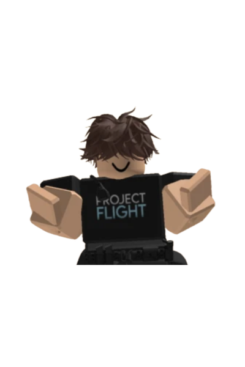

About Me
Hi there! I'm Andrew, a high school student positioned in Sydney who has just started learning the basics of coding. Things I enjoy doing include, but aren't restricted to: Engineering Technology, Timber Technology, Bike Riding, Computers and more.
About this Website
This website was created for our school Computing Tech Assessment task where we were required to code a portfolio. This website will showcase the projects that I have made not only throughout school but also anything impressive in day-to-day life. Throughout the years, this website till constantly be facing updates but also changes to its layout to make it look more modern and up to date. experiences.
Skills and Experiences
Some of my skills include: Fusion 360, Playing the piano, [Insert Here Once Accomplished]. Experiences: [Insert Here Once Accomplished]